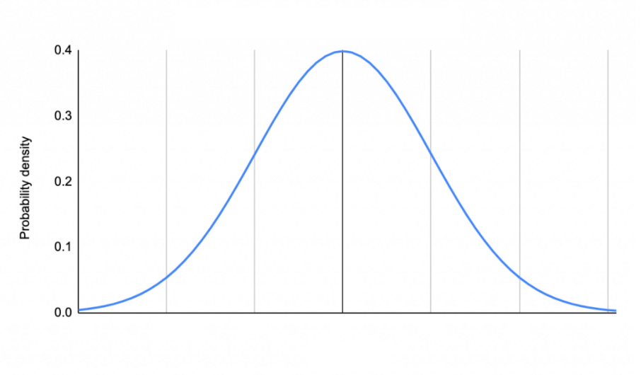

We have a claim about a population parameter and form competing hypothesis to test the claim.
We then determine which hypothesis is better supported by our sample data.
We are always forming the hypothesis about a population parameter.
Hypothesis test
\(H_0\) (Null Hypothesis): The population parameter is a particular value and any observed sample differences is due to chance variation. This is what we expect.
\(H_A\) (Alternative Hypothesis): There is a reason besides chance that explains the sample data.
Writing hypotheses examples
\(H_0\): \(\mu=5\)
\(H_A\): \(\mu\ne5\)
\(H_0\): \(\pi=0.5\)
\(H_A\): \(\pi\ne0.5\)
\(H_0\): \(\mu_1-\mu_2=0\)
\(H_A\): \(\mu_1-\mu_2\ne0\)
\(H_0\): \(\beta_1=0\)
\(H_A\): \(\beta_1\ne0\)
. . .
These are called two-sided tests. There also exists one-sided tests ex: \(H_0: \pi \geq 0.5\) vs \(H_A: \pi < 0.5\) but they are NOT necessary. We can (and should) ALWAYS use a two-sided test.
P-values
In order to determine if the null hypothesis is likely to be true we calculate a p-value.
p-value: probability of observing an estimate as extreme as the one you observed from the data if the null was true.
A small p-value means the observed sample data is unlikely to occur under the null hypothesis. ie: proof by contradiction. Reject the null hypothesis because it is probably not true.
prop.test(x = #, n = #, p= \(\pi_0\), correct=FALSE)
Regression slope
lm() summary
Diff in mean
t.test(x = data1$variable, y = data2$variable)
Diff in proportion
prop.test(x = c(#, #), n = c(#, #), correct=FALSE )
Example 1
You heard a zoologist claim the average weight of penguins is at least 4250 g.
You want to test this claim so you collect a random sample of penguins and measure their weight, stored in the penguins dataset from the palmerpenguins package.
You heard a zoologist claim the average weight of penguins is at least 4250 g.
You want to test this claim so you collect a random sample of penguins and measure their weight, stored in the penguins dataset from the palmerpenguins package.

\(H_0:\)
\(H_A:\)
t.test(x = penguins$body_mass_g, mu =4250)
One Sample t-test
data: penguins$body_mass_g
t = -1.1126, df = 341, p-value = 0.2667
alternative hypothesis: true mean is not equal to 4250
95 percent confidence interval:
4116.458 4287.050
sample estimates:
mean of x
4201.754
Example 2
You think that 33% of penguins belong to the Adelie species.
You want to test this claim so you collect a random sample of penguins and count how many are of the Adelie species, stored in the penguins dataset from the palmerpenguins package.
\(H_0:\)
\(H_A:\)
penguins %>%count(species)
# A tibble: 3 × 2
species n
<fct> <int>
1 Adelie 152
2 Chinstrap 68
3 Gentoo 124
prop.test(x =153, n =344, p =0.33)
1-sample proportions test with continuity correction
data: 153 out of 344, null probability 0.33
X-squared = 19.977, df = 1, p-value = 7.837e-06
alternative hypothesis: true p is not equal to 0.33
95 percent confidence interval:
0.3917305 0.4990579
sample estimates:
p
0.4447674